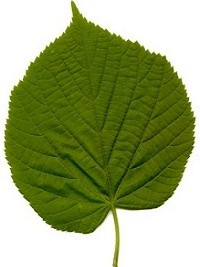
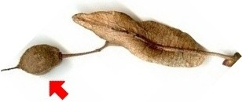

|
| Ähnliche Bäume:
Die Sommerlinde ist der Winterlinde sehr ähnlich. Ihre Blätter sind aber auf der Oberseite weich behaart.
 |  Ihre Früchte sind kantig. Sie lassen sich mit den Fingern nicht zerdrücken.
Die Winterlinde und die Sommerlinde kreuzen sich leicht miteinander.
Die Kreuzung zwischen ihnen heißt Holländische Linde. Sie ist nur schwer von der Winterlinde und der Sommerlinde zu unterscheiden.
|